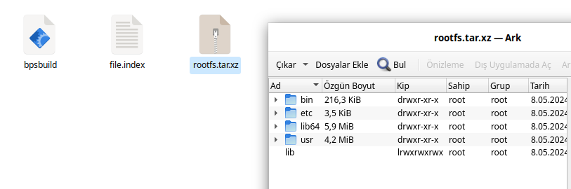
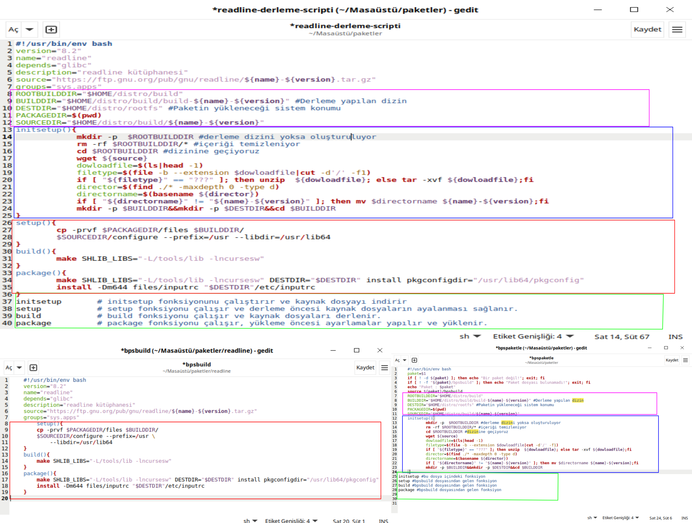
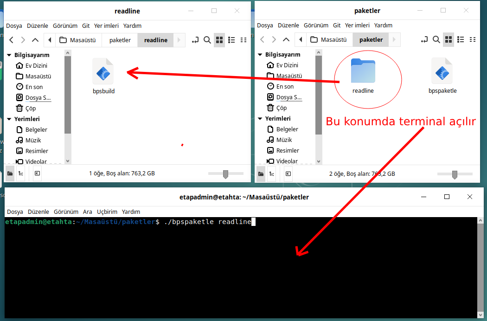

Paket Oluşturma¶
Paket sisteminde en önemli kısımlardan birisi paket oluşturmadır. Bu işlem paketin derlenmesi ve derlenmiş paketin belirli bir yapıyla saklanması olayıdır. Bu saklanan paket daha sonra ihtiyaç halinde uzaktan(internet üzerinden) ve yerelden istediğimiz sisteme kurma işlemidir. Bu başlıkta paketin derlenmesi ve saklanması(paket oluşturma) anlatılacaktır.
Paket oluşturma işlemi sırayla şu aşamalardan oluşmaktadır.
Paketin indirilmesi
Paketin derleme öncesi hazırlanması(configure)
Paketin derlenmesi
Derlenmiş paketin bir dizine yüklenmesi
Yüklenen dizindeki dosya ve dizin yapısının konum listesini tutan file.index oluşturulması
Derlenmiş paketin bir dizinin sıkıştırılması
Sıkıştırılmış derlenmiş dizin, file.index ve derleme talimatının paket isim ve versiyonuyla tekrardan sıkıştırılması
Burada maddeler halinde anlatılan işlem adımlarını bir paket oluşturma amacıyla sırasıyla yapmamız gerekmektedir. 7. maddede anlatılan son sıkıştırılma öncesi yapı aşağıda gösterilmiştir.
{kind=link}
bps Paket Oluşturma¶
bps paket sisteminin temel parçalarından en önemlisi paket oluşturma uygulamasıdır. Dokümanda temel paketlerin nasıl derlendiği Paket Derleme başlığı altında anlatılmıştı. Bir paket üzerinden(readline) örneklendirerek paketimizi oluşturacak scriptimizi yazalım.
Dokümanda readline paketi nasıl derleneceği aşağıdaki script olarak verilmiştir.
#!/usr/bin/env bash
version="8.2"
name="readline"
depends="glibc"
description="readline kütüphanesi"
source="https://ftp.gnu.org/pub/gnu/readline/${name}-${version}.tar.gz"
groups="sys.apps"
display=":$(ls /tmp/.X11-unix/* | sed 's#/tmp/.X11-unix/X##' | head -n 1)" #Detect the name of the display in use
user=$(who | grep '('$display')' | awk '{print $1}') #Detect the user using such display
ROOTBUILDDIR="/home/$user/distro/build" # Derleme konumu
BUILDDIR="/home/$user/distro/build/build-${name}-${version}" #Derleme yapılan paketin derleme konumun
DESTDIR="/home/$user/distro/rootfs" #Paketin yükleneceği sistem konumu
PACKAGEDIR=$(pwd) #paketin derleme talimatının verildiği konum
SOURCEDIR="/home/$user/distro/build/${name}-${version}" #Paketin kaynak kodlarının olduğu konum
initsetup(){
mkdir -p $ROOTBUILDDIR #derleme dizini yoksa oluşturuluyor
rm -rf $ROOTBUILDDIR/* #içeriği temizleniyor
cd $ROOTBUILDDIR #dizinine geçiyoruz
wget ${source}
for f in *\ *; do mv "$f" "${f// /}"; done #isimde boşluk varsa silme işlemi yapılıyor
dowloadfile=$(ls|head -1)
filetype=$(file -b --extension $dowloadfile|cut -d'/' -f1)
if [ "${filetype}" == "???" ]; then unzip ${dowloadfile}; else tar -xvf ${dowloadfile};fi
director=$(find ./* -maxdepth 0 -type d)
directorname=$(basename ${director})
if [ "${directorname}" != "${name}-${version}" ]; then mv $directorname ${name}-${version};fi
mkdir -p $BUILDDIR&&mkdir -p $DESTDIR&&cd $SOURCEDIR
}
setup(){
cp -prvf $PACKAGEDIR/files $SOURCEDIR/
./configure --prefix=/usr \
--libdir=/usr/lib64
}
build(){
make SHLIB_LIBS="-L/tools/lib -lncursesw"
}
package(){
make SHLIB_LIBS="-L/tools/lib -lncursesw" DESTDIR="$DESTDIR" install pkgconfigdir="/usr/lib64/pkgconfig"
install -Dm644 $SOURCEDIR/files/inputrc "$DESTDIR"/etc/inputrc
${DESTDIR}/sbin/ldconfig -r ${DESTDIR} # sistem guncelleniyor
}
initsetup # initsetup fonksiyonunu çalıştırır ve kaynak dosyayı indirir
setup # setup fonksiyonu çalışır ve derleme öncesi kaynak dosyaların ayalanması sağlanır.
build # build fonksiyonu çalışır ve kaynak dosyaları derlenir.
package # package fonksiyonu çalışır, yükleme öncesi ayarlamalar yapılır ve yüklenir.
Bu script readline kodunu internetten indirip derliyor ve kurulumu yapıyor. Aslında bu scriptle paketleme, paket kurma işlemini bir arada yapıyor. Bu işlem mantıklı gibi olsada paket sayısı arttıkça ve rutin yapılan işlemleri tekrar tekrar yapmak gibi işlem fazlalığına sebep olmaktadır.
Bu sebeplerden dolayı readline paketleme scriptini yeniden düzenleyelim. Yeni düzenlenen halini bpspaketle ve bpsbuild adlı script dosyaları olarak düzenleyeceğiz. Genel yapısı aşağıdaki gibi olacaktır. Script dosyasının yeniden bpspaketle ve bpsbuild şeklinde ayrıştırılmış hali resimde gözükmektedir. Devamında ise packageindex ve packagecompress fonksiyonları bpspaketle dosyasına eklenecektir.
{kind=link}
bpsbuild Dosyası¶
setup() {}
build() {}
package() {}
bpspaketle Dosyası¶
#genel değişkenler tanımlanır
initsetup() {}
#bpsbuild dosya fonksiyonları birleştiriliyor
source bpsbuild # bu komutla setup build package fonsiyonları bpsbuild doyasından alınıp birleştiriliyor
packageindex() {}
packagecompress() {}
Aslında yukarıdaki bpspaketle ve bpsbuild adlı script dosyaları tek bir script dosyası olarak bpspaketle dosyası. İki dosyayı birleştiren source bpsbuild komutudur. bpspaketle dosyası aşağıdaki gibi düşünebiliriz.
#genel değişkenler tanımlanır
initsetup() {}
setup() {} #bpsbuild dosyasından gelen fonksiyon, "source bpsbuild" komutu sonucu gelen fonksiyon
build() {} #bpsbuild dosyasından gelen fonksiyon, "source bpsbuild" komutu sonucu gelen fonksiyon
package() {} #bpsbuild dosyasından gelen fonksiyon, "source bpsbuild" komutu sonucu gelen fonksiyon
packageindex() {}
packagecompress() {}
Bu şekilde ayrılmasının temel sebebi bpspaketle scriptinde hep aynı işlemler yapılırken bpsbuild scriptindekiler her pakete göre değişmektedir. Böylece paket yapmak için ilgili pakete özel bpsbuild dosyası düzenlememiz yeterli olacaktır. bpspaketle dosyamızda bpsbuild scriptini kendisiyle birleştirip paketleme yapacaktır.
bpsbuild Dosyamızın Son Hali¶
#!/usr/bin/env bash
version="8.2"
name="readline"
depends="glibc"
description="readline kütüphanesi"
source="https://ftp.gnu.org/pub/gnu/readline/${name}-${version}.tar.gz"
groups="sys.apps"
#2. madde, derleme öncesi hazırlık
setup(){
cp -prvf $PACKAGEDIR/files $BUILDDIR/
$SOURCEDIR/configure --prefix=/usr \
--libdir=/usr/lib64
}
#3. madde, paketin derlenmesi
build(){
make SHLIB_LIBS="-L/tools/lib -lncursesw"
}
#4. madde, derlenen paketin bir dizine yüklenmesi
package(){
make SHLIB_LIBS="-L/tools/lib -lncursesw" DESTDIR="$DESTDIR" install pkgconfigdir="/usr/lib64/pkgconfig"
install -Dm644 files/inputrc "$DESTDIR"/etc/inputrc
}
bpspaketle Dosyamızın Son Hali¶
#!/usr/bin/env bash
set -e
paket=$1
dizin=$(pwd)
if [ ! -d ${paket} ]; then echo "Bir paket değil!"; exit; fi
if [ ! -f "${paket}/bpsbuild" ]; then echo "Paket dosyası bulunamadı!"; exit; fi
echo "Paket : $paket"
source ${paket}/bpsbuild
ROOTBUILDDIR="/tmp/bps/build"
BUILDDIR="/tmp/bps/build/build-${name}-${version}" #Derleme yapılan dizin
DESTDIR="/tmp/bps/rootfs" #Paketin yükleneceği sistem konumu
PACKAGEDIR=$(pwd)
SOURCEDIR="/tmp/bps/build/${name}-${version}"
#1. madde, paketin indirilmesi
initsetup(){
mkdir -p $ROOTBUILDDIR #derleme dizini yoksa oluşturuluyor
rm -rf $ROOTBUILDDIR/* #içeriği temizleniyor
cd $ROOTBUILDDIR #dizinine geçiyoruz
wget ${source}
dowloadfile=$(ls|head -1)
filetype=$(file -b --extension $dowloadfile|cut -d'/' -f1)
if [ "${filetype}" == "???" ]; then unzip ${dowloadfile}; else tar -xvf ${dowloadfile};fi
director=$(find ./* -maxdepth 0 -type d)
directorname=$(basename ${director})
if [ "${directorname}" != "${name}-${version}" ]; then mv $directorname ${name}-${version};fi
mkdir -p $BUILDDIR&&mkdir -p $DESTDIR&&cd $BUILDDIR
}
#6. madde, paketlenecek dosların listesini tutan file.index dosyası oluşturulur
packageindex()
rm -rf file.index
cd /tmp/bps/build/rootfs-${name}-${version}
find . -type f | while IFS= read file_name; do if [ -f ${file_name} ]; then echo ${file_name:1}>>../file.index; fi done
find . -type l | while IFS= read file_name; do if [ -L ${file_name} ]; then echo ${file_name:1}>>../file.index; fi done
}
# paket dosyası oluşturulur;
# kurulacak data rootfs.tar.xz, file.index ve bpsbuild dosyaları tek bir dosya olarak tar.gz dosyası olarak hazırlanıyor.
#7. madde, tar.gz dosyası olarak hazırlanan dosya bps ismiyle değiştirilip paketimiz hazırlanır.
packagecompress()
{
cd /tmp/bps/build/rootfs-${name}-${version}
tar -cf ../rootfs.tar ./*
cd /tmp/bps/build/
xz -9 rootfs.tar
tar -cvzf paket-${name}-${version}.tar.gz rootfs.tar.xz file.index bpsbuild
cp paket-${name}-${version}.tar.gz ${dizin}/${paket}/${name}-${version}.bps
}
# fonksiyonlar aşağıdaki sırayla çalışacaktır.
initsetup #bu dosya içindeki fonksiyon (indirilmesi)
setup #bpsbuild dosyasından gelen fonksiyon (derleme öncesi hazırlık)
build #bpsbuild dosyasından gelen fonksiyon (derleme)
package #bpsbuild dosyasından gelen fonksiyon (derlenen paketin dizine yüklenemesi)
packageindex #bu dosya içindeki fonksiyon (dizine yüklelen paketin indexlenmesi)
packagecompress #bu dosya içindeki fonksiyon (index.lst, derleme talimatı ve dizinin sıkıştırılmas)
Burada readline paketini örnek alarak bpspaketle dosyasının ve bpsbuild dosyasının nasıl hazırlandığı anlatıldı. Diğer paketler için sadece hazırlanacak pakete uygun şekilde bpsbuild dosyası hazırlayacağız. bpspaketle dosyamızda değişiklik yapmayacağız. Artık bpspaketle dosyası paketimizi oluşturan script bpsbuild ise hazırlanacak paketin bilgilerini bulunduran script doyasıdır.
Paket Yapma¶
Bu bilgilere göre readline paketi nasıl oluşturulur onu görelim. Paketlerimizi oluşturacağımız bir dizin oluşturarak aşağıdaki işlemleri yapalım. Burada yine readline paketi anlatılacaktır.
mkdir readline
cd readline
#readline için hazırlanan bpsbuild dosyası bu konuma oluşturulur ve içeriği readline için oluşturduğumuz bpsbuild dosyası bu konuma kopyalayın
cd ..
./bpspaketle readline # bpspaketle dosyamızın bu konumda olduğu varsayılmıştır ve parametre olarak readline dizini verilmiştir.
Komut çalışınca readline/readline-8.1.bps dosyası oluşacaktır. Aşağıda resimde nasıl yapıldığı gösterilmiştir. Burada anlatılan bpspaketle script dosyasını /bin/ konumuna oluşturnuz ve chmod 755 /bin/bpspaketle komutuyla çalıştırma izni vermeliyiz. bps paket sistemi için yapılacak olan bsppaketle, bpsupdate, bpskur, bpskaldir scriptlerinide /bin/ konumunda oluşturulmalı veya kopyalanmalı ve çalıştırma izni verilmeli.
{kind=link}
Artık sisteme kurulum için ikili dosya, kütüphaneleri ve dizinleri barındıran paketimiz oluşturuldu. Bu paketi sistemimize nasıl kurarız? konusu Paket Kurma başlığı altında anlatılacaktır.